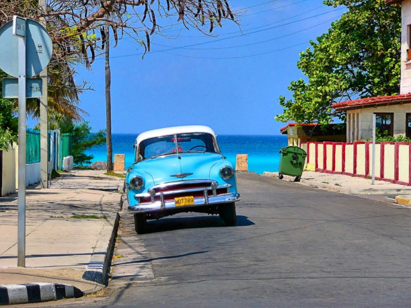
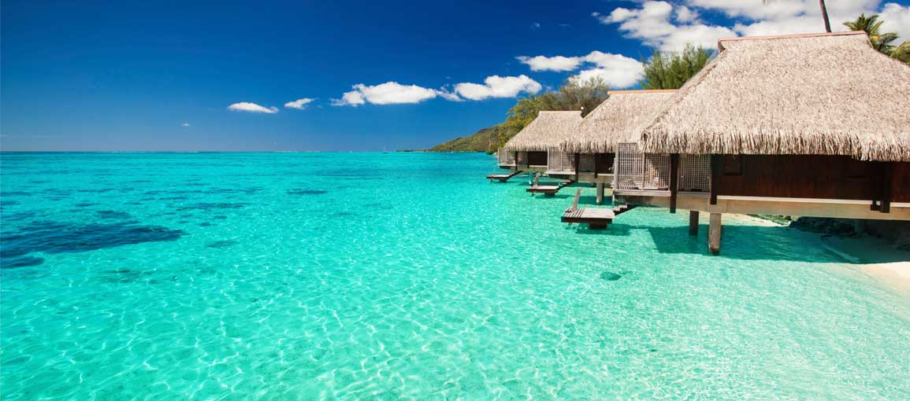
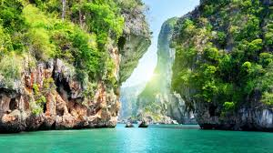

Куба

Едно кътче, накарало Христофор Колумб да възкликне "Това е най-прекрасната земя, която някога е виждало човешкото око", акостирайки за първи път на бреговете й. Едно кътче, вдъхновило Хемингуей да напише "Старецът и морето". Едно кътче... не просто асоциация за море и слънце, а една истинска прекрасна история за музика, извираща от сърцата, за танца, за любовта на хората към живота. Звукът от стъпките на горещите латино ритми, ароматът на кубинските пури и вкусът на отлежал ром… всички те разказват за една страна, потънала в безвремие. Страна… на безкрайните плажове на Варадеро, Кайо Коко и Кайо Ларго, на безбройните малки островчета, пръснати като перли в топлите Кариби, на прекрасните Гуардалавака и Сантяго, на небрежната и стилна Хавана, на незабравимата и пищна Тропикана. Куба просто извиква асоциации за куба либре, салса и почивка, за колорит и карибска емоционалност, за гмуркане сред приказен подводен свят... за бягство от всичко
Бора Бора
Бора Бора (Bora Bora) е вулканичен остров от архипелага Дружествени острови във Френска Полинезия, заобиколен от лагуна и бариерен риф. В центъра му има угаснал вулкан с два върха - Пахиа и Отеману (с височина 727 м).Пясъкът е ситен като прашец, тропическата растителност се състои предимно от палми и хибискус, а изумрудените води на лагуната са рай за гмуркачите със своя пъстър свят от риби и корали.
Тайланд
Тайланд е всичко онова, което очаквате да бъде една екзотична азиатска дестинация за екскурзия и почивка - истинско пиршество за сетивата: с типична азиатска култура, чудесна кухня, приказни острови, колоритни племена в хълмистите райони, бурен нощен живот, едни от най-добрите шопинг центрове в Югоизточна Азия и не на последно място - дружелюбни и усмихнати жители.Сравнително голям по територия, приблизително с размерите на Франция, и с население около 61 милиона души, Тайланд е страна с разнообразен релеф - от планинските и горски масиви на север, през високото североизточно плато, скътало множество археологически и антропогенни находки, огромните оризови и плодни полета в централните равнини, до безкрайната плажна ивица на юг и едни от най-известните плажове в Патая, Пукет, Кох Самуи, о-в Фи Фи и Хуа Хин.